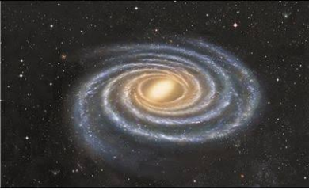
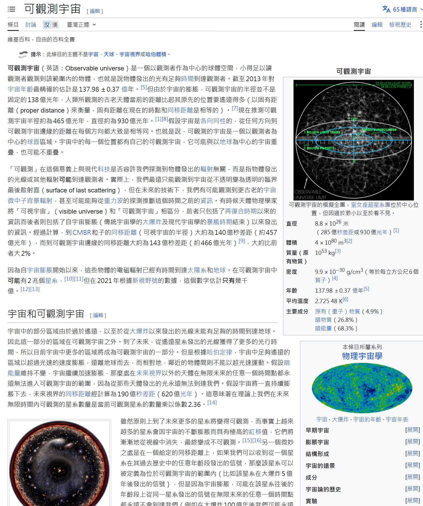

元吾氏07-17 20:09
请大家把游戏第一课的问题+大家所有的回答，和游戏第二课的问题+大家所有的回答，都搜集起来。作为案例思考的材料，深度思考。也作为，接下来的几个回合的游戏素材。
元吾氏07-17 20:17
7月17日的今晚，继续游戏第三课。
第三课的主题，大家猜猜是什么？
📝 接龙：第三课的主题，大家猜猜是什么？ 48 人
1. a.什么是催眠？b.如何脱离轮回？
2. 什么是催醒？
3. 如何消灭轮回
4. 如何脱离轮回?
5. 如何打破循环意识，如何建立自由意识
6. 超级灵化
7. 如何停止意识循环
8. 怎么跳出意识循环
9. 意识循环的破解
10. （地球催醒）如何消灭催眠
11. 如何心想事成
12. 跳出循环
13. 金钱幻
14. 什么是催眠
15. 怎么打破循环
16. 如何创新
17. 如何提高意识强度
18. 什么是催眠轮回
19. 如何脱离轮回
20. 什么是思考，如何自主思考？
21. 灵界的轮回形式，可能有哪些
22. 什么是意识循环
23. 都有可能
24. 为什么会轮回
25. 如何破解催眠
26. 消灭催眠
27. 如何跳出循环
28. 轮回的运作方式
29. 知道了轮回的形式和本质了，那如何断掉轮回？
30. 意识自由的本质
31. 如何对轮回有免疫力
32. 信息辨识度
33. 轮回和催眠的关系
34. 如何突破和创造新的
35. 什么是四级五级六级轮回
36. 你在什么轮回
37. 1）信息感知/直觉能力 2）记忆回溯 3）客观看待能力
38. 猜不到
39. 如何回歸！
40. 消灭催眠
41. 灵魂怎么陷入轮回和如何脱离轮回
42. 什么是456级轮回
43. 为什么会存在轮回
44. 自由创造
45. 什么是催眠？
46. 什么是催醒？
47. 自由意志
48. 什么是自由意志？
↩ 晓*：咋猜啊
元吾氏07-17 20:26
会思考吗？
↩ 元吾氏：

元吾氏07-17 20:29
这图什么意思？
📝 接龙：3—2 这图什么意思？ 55 人
1. 各种不同的循环模式
2. 粒子运动形式
3. 意识焦点的运行，被轮回锁定的各种形式
4. 意识循环的几种形式
5. 意识循环
6. 意识循环示意图
7. 意识的不同表现
8. 不同的创造模板
9. 各种意识形态
10. 程序意识运动形式
11. 灵的不同循环模式
12. 纠缠模式
13. 不同维度的灵在一起循环
14. 三生万物
15. 所有的图都有一个共同点就是循环
16. 意识循环的表现形式，规律性，可预测性
17. 同一基本元素的不同组合形式
18. 轮回与循环的不同形式
19. 能量粒子的循环方式 意识循环方式 轨迹不同本质一样
20. 各种各样的意识循环
21. 个体的意识循环都模式
22. 本源的一部分展现形式
23. 规律与无规律的统一
24. 不同意识频率的混合，混合成更复杂的“波”
25. 无序
26. 纠缠和无序
27. 无限的多样化
28. 我的运作模式
29. 三个点的各种循环形式
30. 灵的运动形式
31. 意识不同形式
32. 规律性，就如恒星与行星，他们遵循着这些规律运行 反反复复一直循环
33. 不同维度的显化方式？
34. 无序中的有序，这也是轮回，本来是无序变成有序
35. 三者交互关系的可能性
36. 意识焦点沿着固定的轨迹循环运动
37. 三体运动
38. 各种转圈形式，花样变了，本质还是打转
39. 三个意识点组成各种形态
40. 我们复合体灵一起进入的不同的意识循环
41. 不同意识频率的运行轨迹图
42. 意识循环
43. 1，可以理解为不同的意识流在探索一个「东西」上，方向、角度不用固定（自由的）。2，从整体来看，可以理解为有规则的意识活动（程序意识）比如：视频中有些小圈圈是比较规则化的。而有些无规则的意识活动（自由意识）。3，代表本源的有序➕无序（程序意识、自由意识）。
44. 意识的循环运动
45. 精气神的交互循环
46. 混沌摆
47. 我想不明白为什么是三个点不是两个也不是四个
48. 我与二元对立的纠缠
49. 意识循环-程序意识，跳出意识循环-自由意识
50. 三为一体？
51. 弦，零能量空间
52. 合一本源的（也是意识强度的）广度与深度，
53. 意识循环的不同形态
54. 本质上是意识循环，但是在意识循环可以无限的发展为∞循环
55. 一生二，二生三，三生无限♾️
↩ 元吾氏：
元吾氏07-17 20:38
大家想象一下：自然界可能有多少种意识循环？
📝 接龙：例 大家想象一下：自然界可能有多少种意识循环？ 32 人
1.
2. 无限
3. 无限
4. 无数种，
5. 几兆
6. 循环肯定无限啊
7. 无穷，还在不断创造，体验
8. 不同循环横式
9. ∞
10. 无数种
11. 一种
12. 无限
13. 但是你说自然界应该有很多种
14. 无穷大种
15. 0种 1种 无限种
16. 灵的体验需求有多少意识循环就有多少
17. 无数种，万物至繁
18. 无数种
19. 无数种
20. 无数种，各种各样可以一直拓展
21. 一生二二生三三生万物，乃无限
22. 无数种或者是一种
23. 可以是一种，也可以是无数种。一种是本质，无数种是表现形式
24. 单个意识循环可能只有一种，多个意识循环互相影响，可能会产生无数种形式
25. 一个意识想创造多少就会有多少，而这个意识是无限的
26. 本质是一种，根据视角不同，表现形式可以多种多样
27. 观察者和参与者
28. 是O也是无限
29. 无限多
30. 无限多。程序，上瘾，局限，执着等等的体验创造是无限的
31. 可以是一种也可以是无数种，全频本源
32. 无数或一
↩ 元吾氏：[视频]
元吾氏07-17 20:49
如果(if)：只使用三个意识焦点，就可以有无数种意识循环;
那么(then)：若使用无数个意识焦点，可能有多少种意识循环？
📝 接龙：那么(then)：若使用无数个意识焦点，可能有多少种意识循环？ 24 人
1. 无限
2. 无限
3. 无限的无限
4. 本质唯一
5. 无限
6. 无限*无限
7. 无数*无数
8. 无数个无数
9. 无限^无限
10. 无限✖️无限✖️无限……
11. 只有一种
12. 无限的N次方，朝无限维度拓展
13. ♻️
14. 无数种
15. Print（♾×♾×♾×♾.....）
16. 去比邻星那边问一下三体 就知道了
17. 那就没有了呀
18. 无限靠近一
19. 如果无数个意识焦点，就没有循环了，全频
20. 无限♾️种
21. 可以是一种也可以说无数种
22. 无限
23. 可以是一种也可以是无数种，全频本源
24.
↩ 元吾氏：
元吾氏07-17 20:54
这个图是什么范围的意识循环？
📝 接龙：3—5 这个图是什么范围的意识循环？ 48 人
1. 集体意识
2. 个体意识+集体意识
3. 物质界范围
4. 三维之内
5. 焦点被牵引和锁定，程序意识
6.
7. 焦点被牵引和锁定，程序意识，物质界的意识结构
8. 宇宙意识
9. 原子
10. 原子范围
11. 原子
12. 中心化的意识循环，中心点抽调，意识就可以跳出循环
13. 矩阵
14. 零能量空间 物质界原子
15. 个体
16. 有限范围
17. 所有小意识焦点的组合
18. 物质界
19. 有点像地球，应该是物质循环
20. 太阳系
21. 固定范围的
22. 多个个体意识围绕组成的局部集体意识循环
23. 物质界/地球？
24. 多维度
25. 原子核内部循环
26. 原子
27. 原子级别
28. 人体复合体
29. 引力范围轨道式
30. 分子范围
31. 地球轮回系统循环
32. 粒子范围
33. 原子或宇宙零能量空间
34. 可以是微观的原子也可以是宏观的星系
35. 一定规则下的锁定
36. 本源的一级投射（一生三）
37. 原子范围
38. 三维空间范围
39. 三维范围
40. 轮回矩阵范围里的
41. 原子范围
42. 有主意识焦点的，类似金字塔结构的
43. 复合体灵
44. 原子
45. 轮回
46. 一级轮回的意识循环？
47. 组成载体/物質界的范围
48. 控制意识内部
↩ 元吾氏：

元吾氏07-17 21:01
这个图是什么范围的意识循环？
📝 接龙：3—6 这个图是什么范围的意识循环？ 36 人
1. 自然界
2. 物质界规律的意识循环。
3. 物质界
4. 物质界
5. 物质
6. 三维物质界范围
7. 物质界基本意识粒子（如3—5图）聚集而成的意识循环。
8. 物质界
9. 物质
10. 刚刚是原子的话，那这些可以说是由原子所构成的物质了
11. 地球三维物质界的
12. 分子级别
13. 定义
14. 地表3d物质界
15. 宏观物质现象
16. 物质材料
17. 物质界的
18. 物质界
19. 天然与合成物质
20. 物质循环
21. 物质界材料循环
22. 元素
23. 矩阵的一级和二级循环
24. 物质界
25. 地表物质界
26. 物质界元素
27. 一个主意识焦点产生的一个大循环，类似于意识强度中惯性的分化性，很多分意识焦点其实还在这个主意识焦点的映像下，分化循环——主要由一个大的体验倾向产生
28. 有机物和无机物范围
29. 左边本源 右边人类集体意识
30. 物质界的最小粒子
31. 自然界对应的是灵界，人造物质对应的人为的，其实都是循环，但是循环的形式确不一样
32. 物质界的循环，包括自然循环➕人工改变的循环
33. 物品范围
34. 固态
35. 人为的物质循环
36. 物质界
↩ 元吾氏：
元吾氏07-17 21:07
这个图是什么范围的意识循环？
📝 接龙：3—7 这个图是什么范围的意识循环？ 41 人
1. 物质界基本意识粒子（图3—5）聚集而成的意识循环
2. 三维自然界
3. 关于“过程和阶段”的意识循环
4. 意识循环---粒子循环----材料循环----物质循环，意识越来越聚焦，越来越固化，意识创造物质界的过程
5. 自然生物范围
6. 植物意识循环
7. 植物
8. 植物世界的循环
9. 植物界意识循环
10. 植物范围内的意识循环
11. 植物界意识循环
12. 有形植物
13. 植物基因
14. 植物类型
15. 植物载具范围
16. 木元素意识的循环
17. 植物范围
18. 植物载具
19. 植物界
20. 植物界
21. 载具
22. 生命体，生生不息
23. 植物界的植物循环
24. id意识
25. 生命形式往复
26. 就5种植物循环
27. 不断进化，固化过程
28. 生长过程 能量转化的意识循环
29. 物质界植物
30. 植物体
31. 一维度植物意识
32. 轮回形式
33. 无限延续
34. 植物生发型意识循环
35. 生物范围
36. 外观生长形态的意识循环
37. 多种植物的生长过程特性
38. 也可以说是关于“时间和变化”的意识循环
39. 植物生长
40. 物质宇宙的创造起源
41. 植物类型的分化循环
📝 接龙：3-8 这个图是什么范围的意识循环？ 29 人
1. 动物范围
2. 有形动物
3. 各种动物
4. 物质界基本意识粒子（图3—5）按照某种规则聚集而成的意识循环。表现为动物
5. 动物
6. 动物载具
7. 动物
8. 动物意识循环
9. 动物界各种形态
10. 载具分化的意识循环
11. 动物机器人
12. 来自于组成动物焦点的意识循环
13. 动物载具、生命形式
14. 动物不同形态
15. 动物体的意识循环
16. 动物鸟类昆虫等
17. 动物界的动物循环
18. 基本粒子～分子~固体~植物~动物意识循环
19. 地球
20. 物质界动物
21. 二维度载具意识循环
22. 物质界动物循环
23. 各种想象创造的循环
24. 动物形，游戏载具意识循环
25. 物质世界动物意识循环
26. 物质界动物的意识循环
27. 物质界动物载具范围
28. 动物世界
29. 這個圖是動物類的循環。也是碳基生命。
元吾氏07-17 21:25
这个图是什么范围的意识循环？
📝 接龙：3—9 这个图是什么范围的意识循环？人体 37 人
1. 意识循环---粒子循环----材料循环----（物质循环）----植物循环----动物循环----人体循环，意识越来越聚焦，越来越固化，元哥在教我们意识创造物质界的原理和过程，从无形到有形有相，越来越物质化，具体化的过程
2. 人体肉身范围
3. 人形生物意识循环
4.
5. 人形载具
6. 人体载具
7. 物质体
8. 肉体范围内的意识循环
9. 人体意识循环模型（如果我们认为我们是人，那么我们的意识焦点会只专注在人体的意识循环模型上，哪怕只有三个意识焦点在此）
10. 人体模型意识循环（如果我们认为我们是人，那么我们的意识焦点会只专注在人的这个人体的意识循环模型上，哪怕只有三个意识焦点在此）
11. 人体意识循环模型（如果我们认为我们是人，那么我们的意识焦点会只专注在人的这个人体的意识循环模型上，哪怕只有三个意识焦点在此）
12. 肉体循环
13. 人体载具内所有的意识循环
14. 人体基建/灵魂玩具体循环
15. 人类游戏体
16. 肉体载具
17. 人体范围
18. 人体能量 人体血液，人体呼吸，人体消化等等
19. 肉体载具
20. 肉体载具
21. 人体有机载具
22. 复合体次元来了，肉身界范围
23. 动物（肉体）循环
24. 肉体载具
25. 所有人体细胞的意识循环
26. 人体载具
27. 人体意识循环
28. 人体肉体循环
29. 我想象了各种各样的东西，想要体验一下我的想象的结果会是如何呢？于是我开始想象和创造了载具，想要体验我创造出来的一切….
30. 人形载具
31. 第一身体意识
32. 人体筋肉的意识循环
33. 从婴儿到老头儿，从儿子变父亲，后开又成为爷爷
34. 物质界人体
35. DNA
36. 人体循环
37. 我想要和活在我的创造里
O*07-17 21:31
道不可道，但…此刻…激动想哭
↩ O*：道不可道，但…此刻…激动想哭
元吾氏07-17 21:32
元吾氏07-17 21:33
这个图是什么范围的意识循环？
📝 接龙：3—10 这个图是什么范围的意识循环？ 36 人
1. 地球的物质循环
2. 星体循环
3. 更大的星球体
4. 天体规律循环，飞行器循环 物理结构循环
5. 行星范围
6. 地月行星系统范围的意识循环
7. 星球玩具范围的意识循环
8. 我是地球
9. 行星系统循环
10. 地月系循环
11. 地球范围
12. 行星 卫星循环
13. 地月系统
14. 地月系范围
15. 行星级别
16. 星球结构、星球
17. 星体循环，游乐场创造
18. 物质界行星
19. 地月矩阵
20. 🌏范围
21. 行星级意识循环
22. 从意识点，到物质，到植物，到动物，到人体、到地球，其他星体，到星系… 本源的意识创造、意识循环的不同层级形式
23. 星球/不同的游戏区
24. 道具星球之间的意识循环
25. 星球之间的意识范围
26. 星球范围
27. 星球、星盟、想要破除、解放、高难度游戏……
28. 宇宙星系
29. 时间范围、星球范围、时空范围
30. 我想要一个有守护的地球世界。
31. 星球范围
32. 星球循环意识
33. 地球范围意识循环，感觉地球被月球监视
34. 星球范围
35. 行星卫星系统范围
36. 地球循环模式
梦***07-17 21:45
为什么我还是在用头脑理解，感受不到合一啊

↩ 梦***：为什么我还是在用头脑理解，感受不到合一啊
元吾氏07-17 21:49
用直觉去感受
↩ 元吾氏：用直觉去感受
元吾氏07-17 21:49
用灵魂感知的捷径
元吾氏07-17 21:51
这个图是什么范围的意识循环？
📝 接龙：3—11 这个图是什么范围的意识循环？ 41 人
1. 太阳系
2. 太阳系整体
3. 恒星范围
4. 太阳系
5. 星系范围
6. 太阳系
7. 太阳系
8. 恒星循环
9. 星系级别
10. 星体轮回
11. 星系
12. 恒星级
13. 行星循环
14. 物质宇宙范围
15. 太阳系
16. 太阳系
17. 太阳系
18. 星际意识循环
19. 星系循环
20. 星际意识循环
21. 月球三维矩阵控制器
22. 太阳系星系范围
23. 感受到我们在用任何的图片、意识作为切入点，在恢复回到我们创造的状态，我不是一个焦点，而是无数的焦点共同的创造，共同的体验
24. 太阳系循环
25. 恒星范围内，有种大哥带小弟玩的感觉
26. 星系的意识循环
27. 星系团
28. 恒星系统循环
29. 星系循环
30. 太阳系内太阳与其它星球之间的循环
31. 无论是创造还是体验都是我，我不是纯粹的单个意识焦点的体验，而是all the one
32. 本源妈妈说，我的孩子，我永远爱你！本源妈妈，我也爱你！🥰😘
33. 集体意识
34. the solar system。原来英语已经写出来了，“system”，“系”
35. 太阳系的循环
36. 太阳系循环模式
37. 我想要我的地球永远被太阳滋养，我想要我的地球有一些朋友星球，一起构建一个星系家园。呜～呜～呜，我想起了如何创造出了物质宇宙…让眼泪💧飞一会儿
38. 然后我逐渐感受到所有的无论是体验还是创造的我都没有任何的分别，包括宇宙，他们不再是单一宏大的感受……
39. 我创造了我的小世界后，很多朋友都跑过来看👀，你的是什么样的呀？我的是这样的！那你们过来玩呀，我们一起玩，小朋友们说好呀😍，于是意识投影过来我想象的宇宙里，我们一起玩
40. 這張圖是太陽系之間的意識循環。
41. 银河系范围内的意识循环
↩ 大*：那怎么合一星球，想象星球吗
元吾氏07-17 21:55
用直觉去感受
↩ Yu**ka：当这些范围意识循环的意识焦点突破了循环，都会发生什么？
元吾氏07-17 21:55
你猜

↩ 梦***：我要打通纵向通道
元吾氏07-17 22:01
元吾氏07-17 22:02
这个图是什么范围的意识循环？
📝 接龙：3-12 这个图是什么范围的意识循环？星系 30 人
1. 星系范围
2. 银河系级别的意识循环
3. 银何系
4. 银河系意识循环
5. 银河系循环系统
6. 星系
7. 银河系循环
8. 更大的星系循环
9. 银河系整体
10. 好像本源在看着太阳系的循环，本源没有任何倾向
11. 星系意识循环
12. 星系循环
13. 集体游戏
14. 银河系 地外星囚
15. 无数个太阳系组成星系之间的意识循环
16. 银河系轮回
17. 本质上还是金字塔结构
18. 更多小循环组成的大循环
19. 银河系范围意识循环
20. 银河系系统各之间的意识循环
21. 更大的星系
22. 銀河系內的意識循環。或者是宇宙內的意識循環。
23. 星系
24. 星系的意识循环
25. 本源妈妈说，所有的不爽，痛苦，烦躁，都是我设计的体验课题，目的是帮助你们提升😘我只负责出题，解题要靠你们自己啦🥰🥰
26. 不知道，因为不知道所以不断的在创造知道。知道＆不知道＆半知道半不知道＆……
27. 不同的星星，不同的生物，非生物，有形无形物，星系空间
28. 广大美丽的银河，众多恒星行星玩升级游戏，从行星升级到恒星再到星系级
29. 本源我想要更多不一样的星球，玩更多不一样的有形有相的游戏。
30. 13级意识强度，突围的边界在哪，似被黑洞困住
元吾氏07-17 22:12
这个图是什么范围的意识循环？
📝 接龙：3—13 这个图是什么范围的意识循环？多星系 29 人
1. 星系团范围
2. 物质宇宙
3. 物质宇宙的一部分
4. 宇宙
5. 大宇宙
6. 无数的星系
7. 宇宙循环
8. 星系范围内的意识循环
9. 更多星系的循环
10. 名为宇宙的循环
11. 15级意识，包含所有黑暗和光明
12. 像是一块一块的星系团，是一片区域
13. 有形宇宙
14. 看着像眼睛👀~
15. 大小星系团之间无限的意识循环
16. 宇宙意识循环
17. 宇宙多元宇宙意識循環。
18. 宇宙轮回
19. 宇宙范围
20. 丰富多彩物质宇宙的众多星系，我们穷极一生困在一个小地方是为了什么呢
21. 星系团
22. 整个宇宙
23. 有限与无限的融合 规律与无规律
24. 宇宙级的时空循环系统，有各种重力/时间/空间/粒子变化等物理化学法则
25. 宇宙部分星系的意识循环
26. 宇宙范围意识循环
27. 本宇宙，可见宇宙
28. 多个星系
29. 感觉越来越杂乱无章了，但他居然也是意识循环么
元吾氏07-17 22:19
这个图是什么范围的意识循环？
📝 接龙：3—14 这个图是什么范围的意识循环？ 40 人
1. 物质宇宙
2. 宇宙范围
3. 宇宙轮回
4. 本宇宙
5. 部分宇宙
6. 本宇宙循环
7. 物质宇宙？猜的，其实不知道
8. 本源，意识点
9. 物质宇宙
10. 多维宇宙意识循环
11. 物质界
12. 小本物质宇宙
13. 有形物质宇宙
14. 宇宙
15. 本宇宙
16. 整个宇宙
17. 可见宇宙
18. 本宇宙
19. 本宇宙
20. 更大的星系范围
21. 单一宇宙泡泡
22. 多重宇宙范围内的意识循环
23. 可观测宇宙意识循环
24. 宇宙
25. 无限宇宙中的一个物质宇宙
26. 不知道，好像生万物之前的宇宙混沌状态
27. 可觀察到的極限宇宙意識範圍的循環。
28. 整个三维宇宙拓普图意识循环
29. 本宇宙
30.
31. 超宇宙
32. 好多好多灵，在打造打磨着各种各样的艺术品、工艺品、玩了好久的感觉。逐漸的看到了整个宇宙的雏形
33. 多维宇宙意识循环
34. 物质宇宙循环
35. 个人意识轮回
36. 人天本我意识循环
37. 物质宇宙的人类当前的极限，进入无限的物质循环光，量子，时空。等，还是转向探索意识？
38. 宇宙
39. 我们一起创造分灵出来，在这宇宙里一起玩吧。于是本源百花齐放，百家争鸣，迅速的发展起来。
40. 这还在循环么？可观测宇宙，只要可观测都在循环中？
元吾氏07-17 22:20
https://zh.wikipedia.org/wiki/可观测宇宙
恬***07-17 22:27
不不不，行星和恒星有本质区别，一个是被动的，一个是主动的
紫*07-17 22:29
啊？不都是围着一个中心转吗？都是被动的吧
元吾氏07-17 22:29
你老婆围着你转，是被动的吗？
元吾氏07-17 22:30
只是肉眼所见的那几个而已。肉眼不可见的行星有上千。
不***07-17 22:31
脑子🧠开始疯狂生长！
元吾氏07-17 22:31
是生长脑子🧠？还是生长灵魂👻？
火*07-17 22:32
最大的零能量空间有多大？整个物质宇宙？
元吾氏07-17 22:32
包含所有的“物质宇宙群”，目前有多个物质宇宙群，每个物质宇宙群，又包含很多个物质宇宙。
元吾氏07-17 22:33
目前，零能量空间技术，正在升级中。同时，也在被各种不同宇宙和不同游戏所采纳，作为一种新型的游戏方式之一。
晓*07-17 22:37
难道是，需要个体灵魂和星球，宇宙，好大的可观测宇宙一层一层的合一上去，才是脱离轮回的手段吗
↩ 晓*：难道是，需要个体灵魂和星球，宇宙，好大的可观测宇宙一层一层的合一上去，才是脱离轮回的手段吗
元吾氏07-17 22:40
有人开始思考了
↩ 元吾氏：
元吾氏07-17 22:43
仅仅以上这些图，有多少意识循环范围了？
📝 接龙：3—16 仅仅以上这些图，有多少意识循环范围了？ 22 人
1. 无限
2. 一生二，二生三，三生万物。最终是一种意识的循环所创造。我心即宇宙。
3. 头脑理解版本----纵向通道还未打通）意识循环---粒子循环----材料循环----（物质循环）----植物循环----动物循环----人体循环----地球循环----恒星循环----星系循环----无数的星系循环----宇宙循环，元哥在教我们意识创造物质界的原理和过程，从无形到有形有相，
4. 不知道啊，数不清无穷
5. 无数
6. 无限，但是可以分层次
7. 好多循环
8. 天地开花🌸无穷无尽……
9. 无穷无尽
10. 老鼻子了
11. 多重循环
12. 多了去了
13. 图片16张
14. 无数
15. 观察到了看的见的循环，看不见的循环，正在循环的，结束循环的，又开始准备循环的，衍生出新的循环的，新的旧的又一起循环的
16. 已经不少了，根据观测角度的不同得出的数量不同
17. 意识焦点构成的循环～原子分子～基础无机有机物质～植物～动物～人类～行星～恒星系～星系～众多星系群～物质宇宙，合一范围由小至大由简至繁，最终归1️⃣
18. 小至意识焦点，大至宇宙
19.
20. 大循环♻套小循环♻，在上的如同在下的，你看小到穴位脉轮旋转，大到银河的旋转，宇宙俺就搞不几米了
21. 可见宇宙内循环
22. 数不过来了
↩ 元吾氏：仅仅以上这些图，有多少意识循环范围了？
元吾氏07-17 22:55
如果(if)：一个意识循环范围=一个意识轮回级？
那么(then)：仅仅以上这些图，可看到多少级意识轮回？
📝 接龙：3—17 如果(if)：一个意识循环范围=一个意识轮回级？ 29 人
1. 无数个
2.
3. 无数
4. 9
5. 无数
6. 无数级
7. 不计其数
8. 无数个
9. 但是如果量化可以对标意识强度
10. 9个
11. 看怎么分类
12. 无数级
13. 16
14. 10
15. 6 or16?
16. 粒子，物质，星系，宇宙。四级
17. 本源 0 多少个泡泡就有多少个轮回
18. 还在有形体级别的轮回
19. 意识焦点算一个，原子分子到物质宇宙算一个，物质轮回意识轮回
20. 意识、粒子、物质、生物、星球、太阳系，银河系、星系团，宇宙
21. 10
22. 9种，无数种
23. 粒子 物质 动植物 地球 银河系 星系团 宇宙 ，七个级别
24. 八级意识循环级
25. 三级轮回
26. 在可視範圍內就有至少10個級別的意識輪回。
27. 6个级别的意识轮回
28. 感觉已经无数级的轮回了，就拿人体来说，微粒子，细胞，器官，骨骼，肌肉，皮肤，毛发 等等等等都有着自己的更新周期，已经是很多很多的轮回了，更别说宇宙星辰里面的万物了无穷无尽。
29. 多少个图片多少种
↩ 无*：喔操，细思极恐啊，不得了，不得了！！！
元吾氏07-17 23:05
有人开始思考了？
↩ 元吾氏：

元吾氏07-17 23:13
零能量空间
【元吾氏】
20191116
(A) 普通空间
每个空间，被一个或多个灵，通过想像力创造出来以后，像一个个泡泡。
每个空间泡泡，需要被关注，需要持续地被再创造，需要持续地被输入能量，才能续存。
如果一个空间泡泡被创造之后，不再持续关注，过一段时间再去看，发现它会慢慢地自然消散。
关注=创造能量。
空间的自然消散，是因为能量不守恒。
物体也是由空间结构所组成。
如果一个物体被创造之后，不再持续关注，过一段时间再去看，发现它会自然塌陷、自然消散 。
除非有意识地持续关注，也就是持续地再创造，才能使其不自然塌陷、不自然消散。
(B) 零能量空间
之后有一个灵，发明了一个叫做“零能量空间”的特殊结构空间。来解决普通空间的自然消散的问题。
零能量空间的特殊结构和特性：
1) 循环结构：是一个“自我循环”的特殊结构。能量一旦进入，便在这个自我循环结构里面进行永久性或近永久性循环，不会或者几乎不会向外泄出。也叫“闭环结构”。
2) 零能量：创造此空间的原始能量，会在此闭环结构内进行永久性或近永久性循环。原始空间不会自然消散，能量的消耗为零或近似零。因此称为“零能量空间”。
3) 新能量：新进入的能量，会自动形成新的空间，也就是空间随着能量的增加而自动增长，且不会自然消散。
4) 物体：物体由零能量空间组成，因此，被创造出来的任何物体，可以不需要追加能量而续存。
5) 多空间循环转换：多个空间可以在零能量空间内被创造出来，这些空间消失时，能量不用清零，而是在多空间之间继续循环，也叫做“多空间循环转换”。
(C) 实验与发展
技术发明之后，这个发明灵组织了一个实验小组，由八个灵组成，做了很多实验来验证和完善这个“零能量空间”专利的实用性。实验小组的名字叫做“零”，组长的名字也叫做“零”。
小范围试验成功之后，零能量空间作为“模板”，提供给其他创造者们，让他们去创造很多这样的小空间。
之后，这些创造者们把各自创造的一些小型零能量空间，合并在一起，形成中型零能量空间。
之后，又有更多创造者参与进来，创造了更多的零能量空间，以M&A合并的形式不断扩大，慢慢形成了大型零能量空间、中型零能量空间和很多小型零能量空间的同时并存。
之后，零能量空间，被称作“物质界”，也叫“物质现象界”。
零能量空间循环结构，被称作“能量守恒”。或者“近似守恒”。
多空间零能量循环转换，被称作“能量转换”。
也是物质界的创造原理和过程。
不过，零能量空间的发明灵，还没收取过专利费...
↩ on*****ce：@元吾氏 M＆A合并形式是什么意思？M和A分别指的啥
元吾氏07-17 23:21
商务用语：Mergers and acquisitions 合并与收购
↩ 元吾氏：
元吾氏07-17 23:25
零能量空间示意图
微**07-17 23:25
不过，零能量空间的发明灵，还没收取过专利费…
↩ 微**：不过，零能量空间的发明灵，还没收取过专利费…
元吾氏07-17 23:26
↩ 元吾氏：
元吾氏07-17 23:27
零能量空间意识循环结构示意图
↩ 自*：发明灵是谁呀？

元吾氏07-17 23:31
你猜
↩ 醒*：如果发明零能量空间的灵突然收费会怎么样
元吾氏07-17 23:32
宇宙首富
↩ 王*：@元吾氏 这个零是谁？
元吾氏07-17 23:35
零，是发明灵的分灵，也是发明灵的老婆之一。
↩ 梦***：元哥，只有地球用金钱系统，灵界其他地方用什么贸易啊？
元吾氏07-17 23:36
交换各自发明的游戏/玩具。
↩ 村*****9：@元吾氏 你是发明零

元吾氏07-17 23:38
你猜
↩ 吾**：此“零”与古零有没有关系？
元吾氏07-17 23:45
没有关系。那时候，他还没出生。
↩ 元吾氏：零能量空间
【元吾氏】
20191116
(A) 普通空间
每个空间，被一个或多个灵，通过想像力创造出来以后，像一个个泡泡。
每个空间泡泡，需要被关注，需要持续地被再创造，需要持续地被输入能量，才能续存。
如果一个空间泡泡被创造之后，不再持续关注，过一段时间再去看，发现它会慢慢地自然消散。
关注=创造能量。
空间的自然消散，是因为能量不…
元吾氏07-17 23:46
这个，在无数的宇宙类型之中，目前为止，仅仅是一个“最小的”物质界宇宙，而且仅仅是这个最小物质宇宙的肉眼可观测范围之内，（还不算肉眼可观测范围之外！还不算多重平行物质界宇宙！），就可能有多少级的意识循环/意识轮回了？
↩ 元吾氏：包含所有的“物质宇宙群”，目前有多个物质宇宙群，每个物质宇宙群，又包含很多个物质宇宙。
火*07-17 23:46
所有零能量空间（物质界）都是三维吗
↩ 火*：所有零能量空间（物质界）都是三维吗
元吾氏07-17 23:47
灵能量空间是全维度，三维只是其中很小一部分。
↩ 云*：为什么零能量空间都是 三个意识焦点 不能是两个 四个
元吾氏07-17 23:47
是一个就够了，没有数量的限制。
lo*****he07-17 23:48
“零能量空间技术”，我们是不是也可以学可以用？
↩ lo*****he：“零能量空间技术”，我们是不是也可以学可以用？
元吾氏07-17 23:48
当然
↩ 元吾氏：这个，在无数的宇宙类型之中，目前为止，仅仅是一个“最小的”物质界宇宙，而且仅仅是这个最小物质宇宙的肉眼可观测范围之内，（还不算肉眼可观测范围之外！还不算多重平行物质界宇宙！），就可能有多少级的意识循环/意识轮回了？
吾**07-17 23:48
我们目前所处的宇宙或者是这个地球就是一个零能量空间吗？
元吾氏07-17 23:49
人类的物理学和化学，目前都是零能量空间在三维度的一小部分。
↩ 吾**：我们目前所处的宇宙或者是这个地球就是一个零能量空间吗？
元吾氏07-17 23:50
所有的物质宇宙都是。
又***07-17 23:51
物质宇宙特指的是零能量空间，这种独特的意识循环结构？
↩ 又***：物质宇宙特指的是零能量空间，这种独特的意识循环结构？
元吾氏07-17 23:52
是滴。
但是目前，也逐渐被其它类型宇宙借用，用以创造新型游戏。
↩ 元吾氏：这个，在无数的宇宙类型之中，目前为止，仅仅是一个“最小的”物质界宇宙，而且仅仅是这个最小物质宇宙的肉眼可观测范围之内，（还不算肉眼可观测范围之外！还不算多重平行物质界宇宙！），就可能有多少级的意识循环/意识轮回了？
元吾氏07-17 23:53
你，现在，在玩哪一级/哪个范围的意识循环游戏呢？
元吾氏07-18 00:05
以上，就是今天7月17日催醒游戏第三课主题：
【什么是“意识循环”？什么是“多级意识轮回”？】
7月22日（下周三）继续玩下一轮游戏课题。
大家收集好每次的接龙回答，所有的回答，都是继续游戏的素材。
也是大家灵魂成长的经验收获。
元吾氏2026-07-12 05:38
靈能量空間（物質宇宙）是最新最小的宇宙，還在實驗階段…
x**o2026-07-12 05:38
怎么还在实验阶段
x**o2026-07-12 05:39
不是一直在使用中吗
元吾氏2026-07-12 05:39
太新了呀，還不成熟
x**o2026-07-12 05:39
宇宙不都是这么创造的吗
元吾氏2026-07-12 05:40
不過兩年前又開始創造更新型的宇宙：超級靈宇宙
元吾氏2026-07-12 05:41
No，只有這個宇宙是基於「零能量空間」技術